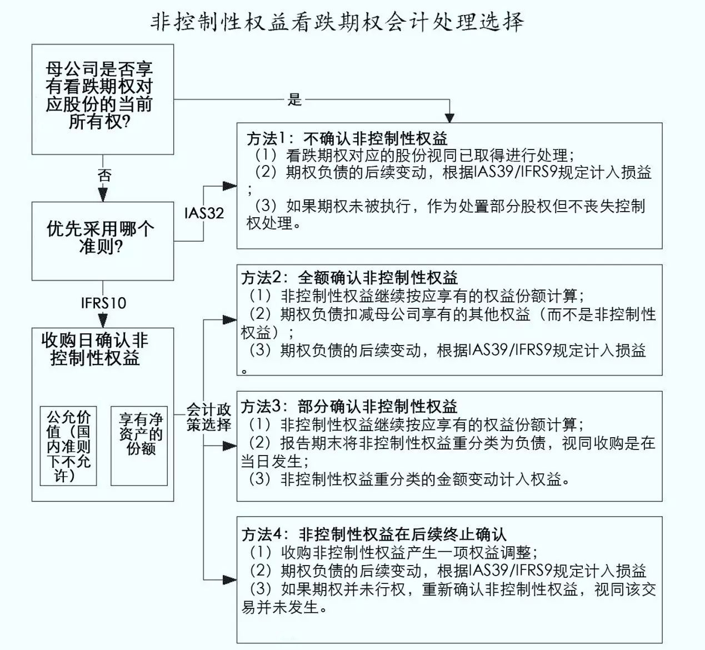

天职国际会计师事务所
企业合并中向少数股东签出看跌期权相关议题
IFRIC撤销议题选注20170809
在企业合并过程中，母公司股东可能向非控制性权益（少数股东权益）签出一项看跌期权（Put Option），使少数股东有权在未来选择向母公司股东出售其持有的子公司剩余股份；或者，在企业合并过程中，母公司股东与少数股东签订一项远期合同，约定在未来确定的时点，母公司股东向少数股东购买子公司剩余股权。对于此类交易的会计处理，由于其涉及到企业合并、合并财务报表、金融工具等多项准则之间的协调，甚至涉及到权益和负债的基本概念问题，因此，国际会计准则理事会（IASB）、国际财务报告解释委员会（IFRIC）在经过多年的讨论后，至今仍未对此类交易所涉及的多方面问题得出统一结论，使此类交易的会计处理成为实务中的难题，其实务处理也各有不同。以下为IASB和IFRIC历年来对此类交易相关问题的讨论会议概要，其某些倾向性意见，可作为实务处理参考。
一、向非控制性权益签出看跌期权相关议题
2006年至2014年间，IFRIC和IASB针对企业合并过程中，向非控制性权益（少数股东权益）签出看跌期权或远期合同的处理进行了多次讨论，涉及会议如下：
| 序号 |
会议组织 |
会议时间 |
议题 |
| 1 |
IFRIC |
2006年11月 |
《国际财务报告准则第3号——业务合并》——少数股东权益获得的看跌期权或远期合同是否属于业务合并中的或有对价？ |
| 2 |
IFRIC |
2006年11月 |
《国际会计准则第32号——金融工具：列报》——少数股东权益持有的看跌期权或远期合同 |
| 3 |
IFRIC |
2010年11月 |
《国际会计准则第32号——金融工具：列报》——向非控制性权益签出看跌期权 |
| 4 |
IFRIC |
2011年1月 |
《国际会计准则第32号——金融工具：列报》——向非控制性权益签出看跌期权 |
| 5 |
IFRIC |
2011年3月 |
《国际会计准则第32号——金融工具：列报》——向非控制性权益签出看跌期权 |
| 6 |
IASB |
2011年9月 |
向非控制性权益签出看跌期权 |
| 7 |
IFRIC |
2011年11月 |
《国际会计准则第32号——金融工具：列报》——向非控制性权益签出看跌期权 |
| 8 |
IASB |
2011年11月 |
向非控制性权益签出看跌期权 |
| 9 |
IFRIC |
2012年1月 |
《国际会计准则第32号——金融工具：列报》——向非控制性权益签出看跌期权 |
| 10 |
IASB |
2012年2月 |
向非控制性权益签出看跌期权 |
| 11 |
IFRUC |
2012年5月 |
《国际会计准则第32号——金融工具：列报》——向非控制性权益签出看跌期权 |
| 12 |
IFRIC |
2013年1月 |
《国际会计准则第32号——金融工具：列报》——向非控制性权益签出看跌期权 |
| 13 |
IASB |
2013年3月 |
向非控制性权益签出看跌期权 |
以下为各次会议议题概要。
1.会议时间：2006年11月
会议组织：IFRIC
议题：《国际财务报告准则第3号——业务合并》——少数股东权益获得的看跌期权或远期合同是否属于业务合并中的或有对价？
议题概要：
IFRIC收到咨询，作为业务合并的一部分，母公司主体签出的收购少数股东权益（非控制性权益）的看跌期权或远期合同，是属于或有对价还是延期的对价。
对于此类安排的会计处理，包括IFRIC所考虑的情况，IASB作为对《国际财务报告准则第3号——业务合并》修订提议的一部分进行考虑。IFRIC预期修订后的《国际财务报告准则第3号》将会对此类安排是否属于或有对价的一部分作出明确。IFRIC相信，其制定相关指引不会比业务合并项目可能的制定更快，因此决定不将该问题纳入议程。
2.会议时间：2006年11月
会议组织：IFRIC
议题：《国际会计准则第32号——金融工具：列报》——少数股东权益持有的看跌期权或远期合同
议题概要：
IFRIC考虑了澄清母公司签出远期合同的会计处理相关咨询，该远期合同约定收购子公司的少数股东权益（非控制性权益），或者少数股东权益（非控制性权益）持有方能够向母公司主体出售其持有权益。
《国际会计准则第32号》第23段①规定，当母公司有义务在未来支付现金以购买少数股东权益，即使支付的现金依赖于持有方行使该期权，则母公司应当确认一项金融负债。在负债初始确认后，不再属于《国际财务报告准则第3号》的范围，而应该按照《国际会计准则第39号》进行会计处理。如果该看跌期权不被行权，则母公司应将该负债重分类为权益。
IFRIC认为，对于相关权益应当如何分类，实务中可能存在分歧。但是，IFRIC不认为其能够及时的对该问题达成一致。因此，IFRIC决定不将该问题纳入议程。
注：
①《国际会计准则第32号》第23段：
“除了第16A和16B段或第16C和16D段中描述的情况之外，如果一项合同包含使主体有义务以现金或其他金融资产回购自身权益工具的条款，则该合同形成主体的一项金融负债，其金额等于赎回时所需支付的金额的现值（例如，远期回购价格的现值、期权的执行价格的现值或其他赎回价格的现值等）。即使合同本身是一项权益工具时也是如此，例如，主体在远期合同中以现金回购主体自身权益工具的义务。当这一金融负债进行初始确认时，它的赎回价格的现值应从权益中扣除并重新归类，金融负债初始确认时以赎回价格现值计量并从权益中重分类至负债，此后根据《国际财务报告准则第9号》进行后续计量。如果合同到期没有发生支付，则该项金融负债的账面价值重新划分为权益。主体回购自身权益工具的合同义务将形成一项金融负债，该负债在数量上等于赎回价格的现值，即使回购义务取决于合同对方是否行使赎回权利（例如，签出的看跌期权给予对方按固定价格向主体出售主体自身权益工具的权利）。”
3.会议时间：2010年11月
会议组织：IFRIC
议题：《国际会计准则第32号——金融工具：列报》——向非控制性权益签出看跌期权
议题概要：
解释委员会收到咨询，在母公司主体合并财务报表中，应当如何对一项看跌期权产生的金融负债账面价值变动进行处理，该看跌期权是由非控制性权益持有方持有（“非控制性权益看跌期权”）？咨询关注于2008年修订后的《国际财务报告准则第3号——业务合并》、《国际会计准则第27号——合并财务报表和单独财务报表》，以及《国际会计准则第39号——金融工具：确认和计量》对于非控制性权益看跌期权的会计处理。
解释委员会承认，《国际会计准则第32号》第23段要求，非控制性权益看跌期权相关金融负债，应当按照《国际会计准则第39号》进行后续计量。解释委员会也承认，《国际会计准则第39号》第55、56段②要求，金融负债账面价值的变动应当计入当期损益。但是，解释委员会指出，非控制性权益看跌期权的会计处理可能需要额外考虑。
解释委员会指出，需要额外考虑的处理，在理事会的“具有权益特征的金融工具”项目中可能会得到更好的阐述。因此，解释委员会决定不将该问题纳入议程。
注：
②《国际会计准则第39号》（2008）：
“55. 因不属于套期关系一部分的金融资产或金融负债公允价值的变动而产生的利得或损失，应按照下述规定确认:
（1）归类为以公允价值计量且其变动计入损益的金融资产或金融负债产生的利得或损失，应当计入损益。
（2）可供出售的金融资产产生的利得或损失，除减值损失以及汇兑利得和损失外，应确认为其他综合收益，直到该金融资产终止确认。在该金融资产终止确认时，之前在其他综合收益中确认的累计利得或损失应作为重分类调整从权益重分类至损益 。但是，使用实际利率法计算的利息应计入损益 。可供出售的权益工具的股利，在主体取得收取价款的权利时，计入损益。
56. 对于以摊余成本计量的金融资产和金融负债，其终止确认或发生减值时，利得或损失应通过摊销过程计入损益。但是，属于被套期项目的金融资产或金融负债,应按第89 段至102 段的规定核算利得或损失。”
4.会议时间：2011年1月
会议组织：IFRIC
议题：《国际会计准则第32号——金融工具：列报》——向非控制性权益签出看跌期权
议题概要：
2011年1月的解释委员会会议中，解释委员会收到了项目组有关“具有权益特征的权益工具”项目的方向及时间安排，以考虑其对非控制性权益看跌期权工作的影响。
解释委员会考虑了可能的解决方案，包括考虑增加《国际会计准则第32号》的范围豁免。解释委员会要求其职员在2011年3月的会议中进一步讨论以下问题：
（1）考虑增加《国际会计准则第32号》的范围豁免的可行性；以及
（2）如果范围豁免是可行的，是否需要增加解释来指定非控制性权益看跌期权的会计处理。
5.会议时间：2011年3月
会议组织：IFRIC
议题：《国际会计准则第32号——金融工具：列报》——向非控制性权益签出看跌期权
议题概要：
在2011年3月的会议中，解释委员会继续讨论了可能的范围豁免。该范围豁免可能改变非控制性权益看跌期权相对于其他衍生工具的计量基础。特别是《国际会计准则第32号》第23段的规定，以期权行权价格的现值确认金融负债，可能不适用于非控制性权益看跌期权。相反，可能适用《国际会计准则第39号》和《国际财务报告准则第9号》有关衍生工具的规定。
该范围豁免仅适用于控制方合并财务报表层面。此外，该范围豁免仅适用于具有以下特征的非控制性权益看跌期权：
（1）非控制性权益看跌期权并未嵌入另一项合同；
（2）非控制性权益看跌期权包含了一项义务，合并集团中的主体需通过交付现金或其他金融资产交换子公司权益来结算该合同。
解释委员会赞同将非控制性权益看跌期权从《国际会计准则第32号》的范围中排除，可能是可行的短期方案。解释委员会要求其职员在将非控制性权益看跌期权从《国际会计准则第32号》的范围中排除后，是否需要对《国际会计准则第27号》、《国际会计准则第39号》（或《国际财务报告准则第9号》）进行相应的修订。解释委员会向理事会提议，应考虑对《国际会计准则第32号》的范围进行修订。
6. 会议时间：2011年9月
会议组织：IASB
议题：向非控制性权益签出看跌期权
议题概要：
根据解释委员会的提议，IASB讨论了可能的范围豁免，在集团合并财务报表层面，将非控制性权益看跌期权从《国际会计准则第32号》的范围中排除。该范围豁免可能导致《国际会计准则第27号》、《国际会计准则第39号》和《国际财务报告准则第9号》对金融负债的计量，与《国际会计准则第27号》和《国际财务报告准则第10号》有关以所有者身份与其他所有者进行的交易（权益性交易）的规定产生不一致。具体差异在于，金融负债的后续计量变动应当计入损益还是权益。
理事会表决决定，不对《国际会计准则第32号》进行修订，将非控制性权益看跌期权排除该准则范围。但是，理事会要求解释委员会考虑所存在的会计处理分歧，但不是改变非控制性权益看跌期权的计量基础，而是通过澄清此类负债后续变动的会计处理。理事会要求其职员获取解释委员会的反馈，以确定是否需要对该问题作进一步考虑。
7.会议时间：2011年11月
会议组织：IFRIC
议题：《国际会计准则第32号——金融工具：列报》——非控制性权益看跌期权
在2011年9月的IASB会议中，理事会决定不采纳解释委员会的提议，不对《国际会计准则第32号》的范围进行修订。
但是，理事会要求解释委员会考虑所存在的会计处理分歧，但不是改变非控制性权益看跌期权的计量基础，而是通过澄清此类负债后续变动的会计处理。理事会要求其职员获取解释委员会的反馈，以确定是否需要对该问题作进一步考虑。
在2011年11月的解释委员会会议中，解释委员会强调，其很愿意进一步考虑该问题，并将该问题重新纳入其议程。解释委员会将与理事会继续讨论该问题的处理方案。
8.会议时间：2011年11月
会议组织：IASB
议题：向非控制性权益签出看跌期权
议题概要：
在本次会议中，IASB讨论了可以向解释委员会提供的指引。IASB决议要求解释委员会分析以下两个问题：
（1）非控制性权益看跌期权的后续计量变动应当确认为损益还是权益。9位理事会成员倾向于计入损益。IASB讨论了该变动是否应当确认为其他综合收益，但决定不再跟进。
（2）上述澄清是仅适用于非控制性权益看跌期权，还是同时适用于看跌期权和远期合同。10位理事会成员倾向于上述澄清同时适用于看跌期权和远期合同。IASB讨论了上述澄清收付适用于所有主体自身权益的合同，但决定不再跟进。
9.会议时间：2012年1月
会议组织：IFRIC
议题：《国际会计准则第32号——金融工具：列报》——向非控制性权益签出看跌期权
议题概要：
在2011年11月的会议中，IASB决议要求解释委员会分析以下两个问题：
（1）非控制性权益看跌期权的后续计量变动应当确认为损益还是权益。
（2）上述澄清是仅适用于非控制性权益看跌期权，还是同时适用于看跌期权和远期合同。
为回应理事会的要求，解释委员会讨论了这两个问题的备选意见的分析。在理事会否决了解释委员会的首选方案，将非控制性权益看跌期权从《国际会计准则第32号》范围排除之后，解释委员会建议理事会通过修订《国际会计准则第27号——合并财务报表和单独财务报表》和《国际财务报告准则第10号——合并财务报表》，以澄清所有非控制性权益看跌期权的计量变动均应计入损益。
解释委员会指出，《国际会计准则第27号》第30段和《国际财务报告准则第10号》第23段③提供了控制性权益和非控制性权益发生变动时的会计处理指引。解释委员会也指出，非控制性权益看跌期权属于金融负债，且其重计量并不会导致控制性权益和非控制性权益发生变动。因此，解释委员会认为，两个段落与本议题不相关。解释委员会进一步指出，该澄清与签出主体自身权益工具的其他衍生工具要求一致。
但是，解释委员会要求其职员考虑，其建议是否可能导致与非控制性权益看跌期权相关的不可预料的结果，包括非控制性权益看跌期权的初始确认或一般合并程序。
解释委员会职员将把两个问题的分析，连同解释委员会的建议向理事会报告，并向理事会请示后续工作。
注：
③《国际会计准则第27号》（2008）第30段和《国际财务报告准则第10号》第23段：
“不会导致丧失对子公司控制权的母公司所有者权益的变动，应作为权益交易（即以所有者身份与其他所有者进行的交易）。”
10.会议时间：2012年2月
会议组织：IASB
议题：向非控制性权益签出看跌期权
议题概要：
在本次会议中，理事会讨论了解释委员会的反馈建议。IASB决议，不对国际财务报告准则进行修订，但决议要求解释委员会发布解释公告草案，以澄清所有非控制性权益看跌期权的计量变动均应计入损益，与解释委员会2012年1月的会议结论一致。
IASB指出，解释公告草案不适用于在采用《国际财务报告准则第3号——业务合并（2008）》之前已发行的非控制性权益看跌期权，这些期权应根据《国际财务报告准则第3号（2004）》作为或有对价进行处理。
理事会职员在在未来的会议中考虑解释委员会的解释公告草案。
11.会议时间：2012年5月
会议组织：IFRIC
议题：《国际会计准则第32号——金融工具：列报》——向非控制性权益签出看跌期权
议题概要：
在本次会议中，解释委员会决议发布解释公告草案，以澄清所有非控制性权益看跌期权的计量变动均应计入损益，与解释委员会2012年1月的会议结论一致。该解释公告草案将提议追溯采用，征求意见期间为120天。13位解释委员会成员赞同该决议，1位反对。
12.会议时间：2013年1月
会议组织：IFRIC
议题：《国际会计准则第32号——金融工具：列报》——向非控制性权益签出看跌期权
议题概要：
在本次会议中，解释委员会讨论并分析了所收到的关于该解释公告草案的反馈意见。解释委员会赞同，如果该草案制定完成，则完成的解释公告应适用于：
（1）在母公司合并财务报表中，导致合并集团主体有义务以现金或其他金融资产收购由非控制性权益持有的子公司股份的看跌期权和远期合同（非控制性权益看跌期权和远期合同）；以及
（2）追溯适用。
解释委员会重申，所确认的非控制性权益看跌期权相关金融负债，应根据《国际会计准则第39号》和《国际财务报告准则第9号》规定进行计量，计量的变动应确认为损益。解释委员会承认，2012年5月发布的解释公告草案，是对现行准则的修正。
解释委员会强调，非控制性权益看跌期权以公允价值净额为基础确认，与《国际会计准则第39号》和《国际财务报告准则第9号》范围内的衍生工具处理一致，可能提供更好的信息。
解释委员会指出，很多反馈意见者认为，解释委员会或者理事会应当对非控制性权益看跌期权或所有签出的主体自身权益衍生工具制定更加完整的指引。这些反馈意见者指出，此类合同的很多会计处理在实务中均存在不一致。
此外，某些反馈意见者认为，对于签出主体自身权益的衍生工具，以赎回金额现值的总额为基础计量，无法提供有用的信息。
因此，在完成解释公告制定前，解释委员会决定建议IASB先考虑《国际会计准则第32号》第23段有关签出主体自身权益的看跌期权和远期合同的要求。解释委员会指出，主要需考虑非控制性权益看跌期权和远期合同的会计处理，是否应当与其他主体自身权益的衍生工具有所不同。
解释委员会将根据所收到的反馈意见向IASB回报，并向IASB请示下一步工作。
13. 会议时间：2013年3月
会议组织：IASB
议题：向非控制性权益签出看跌期权
议题概要：
在本次会议中，IASB讨论了解释委员会的意见和相关反馈意见。IASB初步决定，对《国际会计准则第32号》第23段进行重新复核，包括是否所有或特定的签出主体自身权益的看跌期权和远期合同均应以公允价值净额为基础进行计量。IASB将在后续会议中继续讨论该问题④。
注：
④2014年6月，IASB宣布终止“向非控制性权益签出看跌期权”项目，将该问题纳入“具有权益特征的金融工具”项目考虑，后者目前处于研究阶段，下一步将发布讨论稿。
二、业务合并中强制购买非控制性权益相关议题
2012年至2013年间，IFRIC和IASB针对业务合并中强制购买非控制性权益的处理进行了多次讨论，涉及会议如下：
| 序号 |
会议组织 |
会议时间 |
议题 |
| 1 |
IFRIC |
2012年11月 |
《国际财务报告准则第3号——业务合并》——业务合并中强制购买非控制性权益 |
| 2 |
IFRIC |
2013年3月 |
《国际财务报告准则第4号——业务合并》——业务合并中强制购买非控制性权益 |
| 3 |
IASB |
2013年5月 |
《国际财务报告准则第3号——业务合并》——业务合并中强制购买非控制性权益 |
以下为各次会议议题概要。
1.会议时间：2012年11月
会议组织：IFRIC
议题：《国际财务报告准则第3号——业务合并》——业务合并中强制购买非控制性权益
议题概要：
解释委员会收到咨询，询问业务合并产生的强制购买非控制性权益的会计处理。咨询方指出，当收购方获得了另一主体的控制权时，由于监管要求要约收购额外股权，导致收购方在短期内需购买额外股权，对于此类后续交易，《国际财务报告准则第3号——业务合并》并未明确如何进行会计处理。解释委员会考虑了以下两个方面的问题：
（1）收购控制性权益与后续的强制要约收购（Mandatory Tender Offer， MTO），应当作为单独的交易还是一揽子交易处理？
（2）收购方获得别收购方控制权日，是否应当确认一项MTO相关的负债？
解释委员会初步意见是，收购控制性权益和后续MTO应当作为一揽子收购交易处理。解释委员会初步认为，《国际财务报告准则第3号》有关如何分步处置子公司作为一揽子交易或多项交易的规定⑤，同样适用于收购业务并继续收购被收购方额外权益的交易。解释委员会初步建议国际会计准则理事会通过“年度改进”对《国际财务报告准则第3号》进行修订。
解释委员会也讨论了是否应当在收购方获得被收购方控制权日确认一项MTO相关的负债。解释委员会指出，《国际会计准则第37号》将待执行合同从其适用范围中排除⑥，因此，不需要在取得控制权日确认一项MTO相关的负债。解释委员会初步建议国际会计准则理事会不对《国际财务报告准则第3号》进行相应修订。
注：
⑤实际上应为《国际财务报告准则第10号——合并财务报表》应用指南第97段的规定：
“通过两项或多项安排（交易），母公司可能丧失对子公司的控制权。然而，有些情况表明多项安排应作为一项交易进行会计处理。在确定是否将这些安排作为一项交易进行会计处理时，母公司应考虑这些安排的所有条款、条件及其经济影响。以下一项或多项事实表明，母公司应当将多项安排作为一项交易进行会计处理：
（1） 这些安排在同一时间订立或同时考虑。
（2） 这些安排将形成一项交易以实现整体的商业影响。
（3） 一项安排的发生取决于至少另外一项安排的发生。
（4） 一项安排单独考虑时是不经济的，但当与其他安排一起考虑时就具有经济合理性。例如，当以低于市价的价格处置股份，随后以高于市价的价格处置后续股份来获得补偿。”
⑥《国际会计准则第37号——准备、或有负债和或有资产》第1段：
“本准则适用于所有主体对准备、或有负债和或有资产的会计核算，但以下各项除外：
（1） 待执行合同（亏损性待执行合同除外） 形成的准备、或有负债和或有资产。”
2.会议时间：2013年3月
会议组织：IFRIC
议题：《国际财务报告准则第3号——业务合并》——业务合并中强制购买非控制性权益
议题概要：
在本次会议中，解释委员会继续讨论了是否应当确认一项MTO相关的负债。少部分解释委员会成员认为，应当按照《国际会计准则第32号——金融工具：列报》的规定，在收购方获得被收购方控制权日确认一项MTO相关的负债。其他解释委员会成员认为，MTO既不在《国际会计准则第32号》也不在《国际会计准则第37号》的范围内，所以不需要确认一项负债。
解释委员会承认，在某些法律环境下，主体可能在未获得控制性权益的情况下，也有义务要约收购剩余权益，例如，主体在获得30%股份时，即有义务要约收购剩余70%股份。解释委员会指出，在此类情况下，也同样存在是否应当确认一项负债的问题。
解释委员会将其对于是否应当确认MTO相关负债的意见，向国际会计准则理事会进行了报告，并建议理事会将该问题作为《国际财务报告准则第3号》实施后审议的问题之一考虑。
3.会议时间：2013年5月
会议组织：IASB
议题：《国际财务报告准则第3号——业务合并》——业务合并中强制购买非控制性权益
议题概要：
在本次会议中，IASB讨论了解释委员会的意见和建议。IASB初步同意IFRIC的意见，收购控制性权益和后续MTO应当作为一揽子收购交易处理。但是，IASB暂时不会通过“年度改进”对《国际财务报告准则第3号》进行修订。IASB初步决定，将收购方获得被收购方控制权日MTO的会计处理，与向非控制性权益签出看跌期权（put options）的计量一并进行讨论。
IASB指出，2013年3月的会议中，理事会初步决定，对《国际会计准则第32号》第23段③进行重新复核，包括是否全部或部分签出主体权益工具的看跌期权和远期合同，应当以公允价值净额为基础进行计量。由于MTO在经济实质上与向非控制性权益签出看跌期权类似，IASB成员认为，此类项目的会计处理也应当同时进行考虑。15位IASB赞同该决议，1位成员缺席。
三、向非控制性权益签出以可变数量的母公司股份结算的看跌期权相关议题
2016年，IFRIC针对向非控制性权益签出以可变数量的母公司股份结算的看跌期权的处理进行了讨论，涉及会议如下：
以下为各次会议议题概要。
| 序号 |
会议组织 |
会议时间 |
议题 |
| 1 |
IFRIC |
2016年5月 |
《国际会计准则第32号——金融工具：列报》——向非控制性权益签出以可变数量的母公司股份结算的看跌期权的会计处理 |
| 2 |
IFRIC |
2016年11月 |
《国际会计准则第32号——金融工具：列报》——向非控制性权益签出以可变数量的母公司股份结算的看跌期权的会计处理 |
1.会议时间：2016年5月
会议组织：IFRIC
议题：《国际会计准则第32号——金融工具：列报》——向非控制性权益签出以可变数量的母公司股份结算的看跌期权的会计处理
议题概要：
解释委员会收到咨询，主体应当如何在其合并财务报表中对向非控制性权益签出的看跌期权进行会计处理。该非控制性权益看跌期权存在行权价格，将以可变数量的母公司自身权益工具进行结算。解释委员会被特别问及，在合并财务报表层面，母公司是应当确认：
（1）一项以期权行权价格的现值列报的金融负债，即总额负债；还是
（2）一项以公允价值净额列报的衍生金融负债。
同时，对于母公司具有选择权，以现金或同等价值的可变数量自身权益工具结算执行价格，母公司是否采用与非控制性权益看跌期权相同的方法处理？
解释委员会承认，之前讨论的有关非控制性权益看跌期权问题，都是以现金结算的。这类问题将在理事会的“具有权益特征的金融工具”项目中考虑。
解释委员会指出：
（1）基于之前的讨论，如果不将该问题的范围扩大到一系列类似安排，则无法合理解决该问题。因此，该问题对于解释委员会来说太过宽泛，无法在现行国际财务报告准则和概念框架内有效的解决。
（2）作为具有权益特征的金融工具”项目的一部分，理事会正在对所有主体自身权益的衍生工具进行综合考虑。
因此，解释委员会［提议］不将该问题纳入议程。
2.会议时间：2016年11月
会议组织：IFRIC
议题：《国际会计准则第32号——金融工具：列报》——向非控制性权益签出以可变数量的母公司股份结算的看跌期权的会计处理
议题概要：
与2016年5月会议的意见一致，解释委员会最终决定，不将向非控制性权益签出以可变数量的母公司股份结算的看跌期权的会计处理问题纳入议程。
四、释
企业合并同时向少数股东签出看跌期权或远期合同（包括前述强制购买义务），在未来选择购买或强制购买子公司少数股权，经过前述多年讨论，IASB和IFRIC均未能就此类交易得出合理的处理方法，还有待IASB后续“具有权益特征的金融工具”项目进行考虑。
目前，对于企业合并同时向少数股东签出看跌期权或远期合同（包括前述强制购买义务）交易，可能至少涉及以下几个问题的判断：
（1）签出期权、远期合同（包括强制购买义务），是否属于企业合并交易的一部分？此类合同是否作为企业合并的或有对价，是否作为一揽子交易企业合并？
（2）收购日如何确认少数股东权益？商誉按什么比例计算确认？
（3）收购日是否应当就签出期权、远期合同（包括强制购买义务）确认一项金融负债？该金融负债应以“总额”确认还是“净额”确认？
（4）签出期权、远期合同（包括强制购买义务）相关金融负债后续价值变动是计入损益还是权益？等等。
由于目前IASB和IFRIC均未对上述问题有明确规定，所以，实务中，根据具体事实和情况，结合金融工具相关准则和合并财务报表准则等规定，企业可能存在一定的会计政策选择。
根据国际准则下相关实务操作惯例，笔者认为，对于非控制性权益看跌期权（授予少数股东剩余股权看跌期权），可采用的一般会计处理方法如下图所示：
